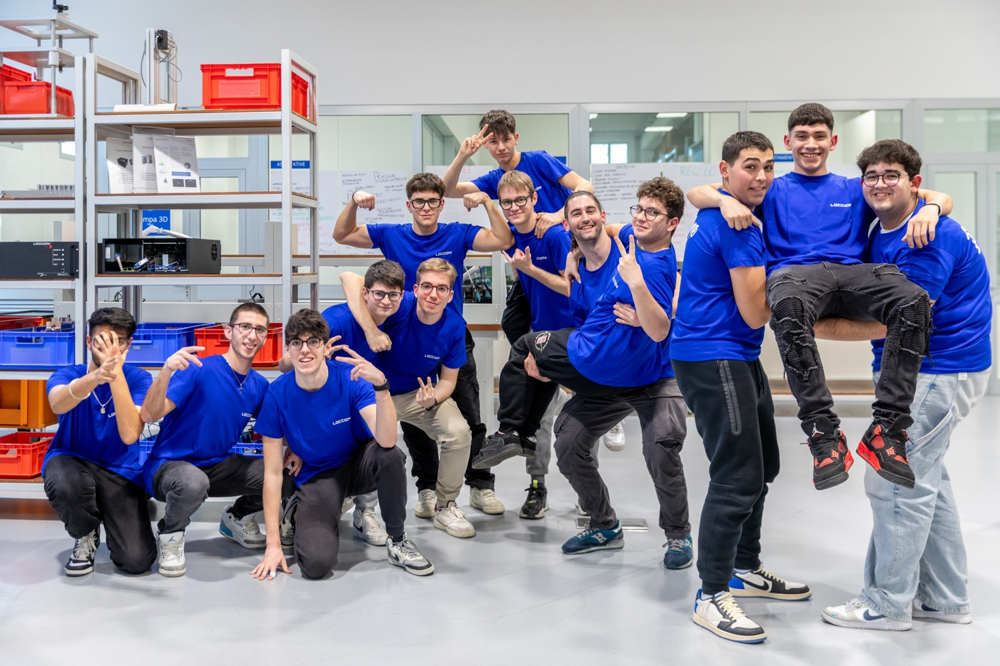
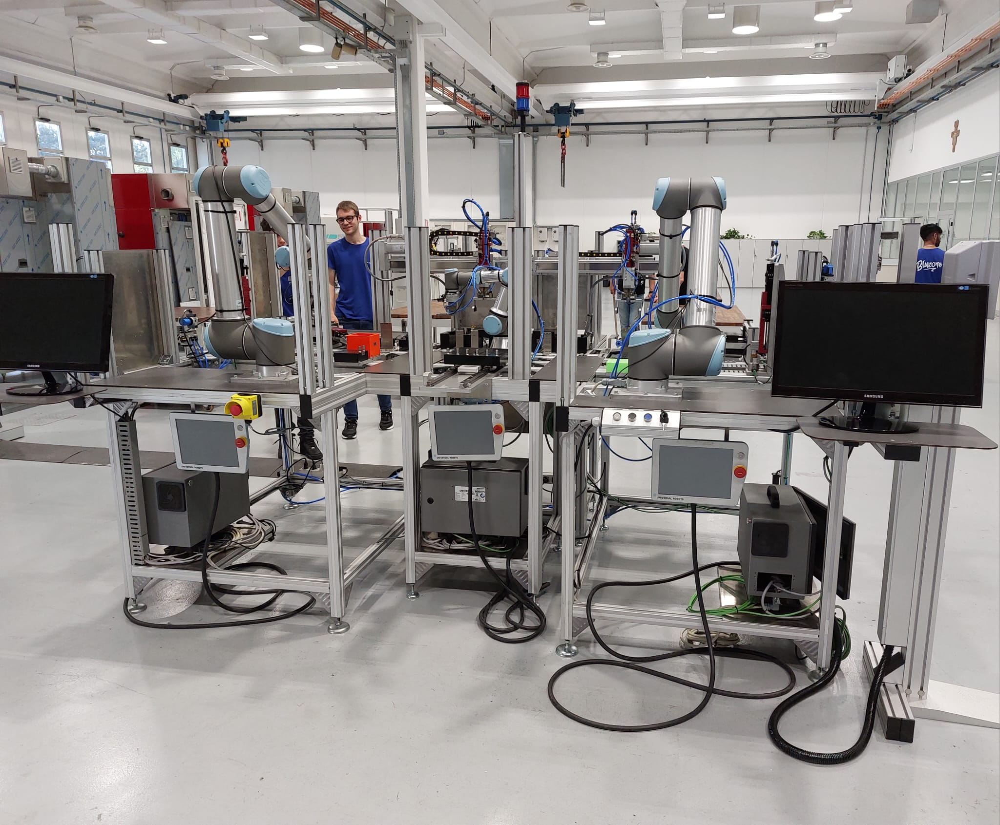

PCTO
1-Periodo di formazione iniziale

- Durante la prima fase di formazione presso l'impresa Loccioni, che si è svolta dal 16 marzo al 18 maggio, io e altre 25 persone selezionate siamo stati suddivisi in due gruppi da 13 partecipanti (il gruppo a cui sono stato assegnato è visibile nella prima foto).Questa divisione è stata studiata in modo che i gruppi fossero bilanciati in base alle competenze di studio di ciascuno, creando un ambiente di apprendimento equilibrato;
- La formazione iniziale prevedeva 2 lezioni a settimana, per un totale di 18 lezioni, ciascuna della durata di 4 ore. Ogni lezione era strutturata in modo da dedicare la 1° ora alla spiegazione di una delle varie competenze tecniche su cui si fonda il lavoro dell'impresa, fornendo anche la teoria necessaria per l’attuazione della successiva attività pratica. Le 3 ore rimanenti, infatti, erano riservate al laboratorio, durante il quale abbiamo avuto modo di acquisire manualità e familiarità con il loro metodo di lavoro(questo approccio pratico era fondamentale per farci ottenere le abilità necessarie per affrontare una commessa);
- L’impresa Loccioni, specializzata nella gestione di commesse ovvero degli incarichi assegnati per la realizzazione di progetti o la fornitura di beni o servizi, ci ha preparati affinché fossimo pronti a lavorare insieme per l’attuazione di una vera e propria commessa;
- La fase successiva (Attuazione della commessa(Dal 20 maggio al 7 giugno)), infatti, si sarebbe svolta dal 20 maggio al 7 giugno e poi dal 9 settembre al 20, periodo durante il quale tutti e 26 i partecipanti avremmo lavorato a una commessa assegnata da un'azienda esterna.
2-Attuazione della commessa (dal 20 maggio al 7 giugno)

- Nella prima fase, tutti e 26 abbiamo ospitato il cliente per cui avremmo dovuto svolgere la commessa, e durante questo incontro, abbiamo ricevuto i requisiti che dovevamo soddisfare affinché il risultato finale fosse accettato. La commessa prevedeva la creazione di una macchina in grado di smistare automaticamente gli iniettori difettosi da quelli buoni.
- Nella seconda fase, ci siamo divisi in gruppi in base alle competenze: un gruppo di informatica, uno di elettronica e uno di meccatronica. Con il supporto dei dipendenti dell'impresa, abbiamo organizzato un calendario, suddividendo in macro compiti le varie componenti da montare della macchina e assegnando le attività ai vari giorni.
- Durante la terza fase, i gruppi hanno sviluppato ognuno ciò che gli era stato assegnato. Anche se ogni gruppo ha riscontrato alcune piccole difficoltà legate alla complessità della commessa.
- Nella quarta fase, abbiamo avviato la fase di collaudo, verificando il corretto funzionamento delle componenti sviluppate e apportando le prime correzioni.
- Infine, nell'ultima fase, il cliente è tornato per controllare lo stato della commessa e dopo aver notato qualche difetto, ci ha suggerito dei cambiamenti. Dopo esserci confrontati, abbiamo deciso unilateralmente di applicare le modifiche durante la seconda fase del PCTO(il risultato del lavoro della prima fase è nella seconda immagine).
3-Attuazione della commessa (dal 9 settembre al 20 settembre)

- Debriefing iniziale: sono stati convocati tutti i gruppi per analizzare i report di collaudo, stilare una lista di problemi aperti e assegnare compiti in coppie miste (informatica, elettronica e meccatronica).
- Progettazione del banco unico: sono stati integrati tutti i componenti sviluppati separatamente in un banco di lavoro modulare, con successivi test di simulazione.
- Ottimizzazione dei test: è stata attuata una fase di affinamento dei parametri dei vari sensori, una correzione del posizionamento dei supporti e ottimizzazione dei tempi di ciclo sulla base dei risultati emersi.
- Incontro finale con il cliente (20 settembre): si è svolta una dimostrazione del banco in funzione al cliente, con annessa presentazione dei risultati dei test e delle migliorie apportate, con l'obiettivo di ottenere l’approvazione definitiva del lavoro svolto.
Conclusioni
- L’esperienza è stata altamente formativa: ho potuto accrescere le mie conoscenze in tutte le discipline coinvolte (informatica, elettronica e meccatronica), applicando teoria e pratica in un contesto reale.
- Sul piano personale, ho sperimentato una significativa crescita in termini di autonomia, organizzazione e fiducia nelle mie capacità, skills fondamentali per il mio percorso futuro.